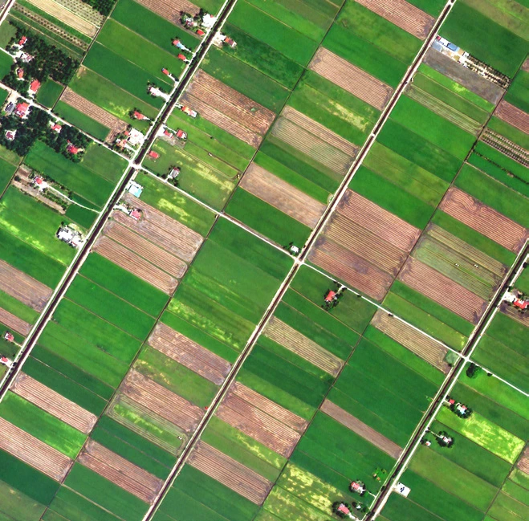
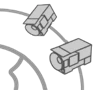
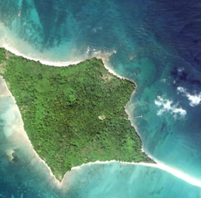
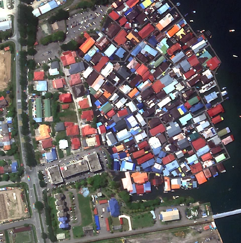
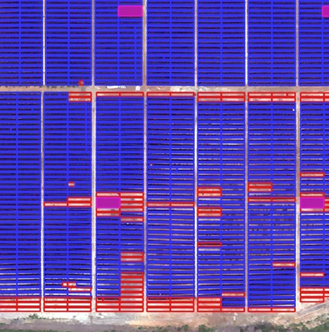
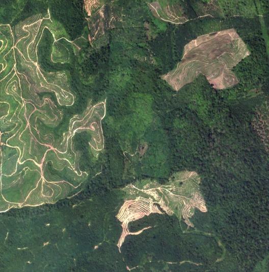
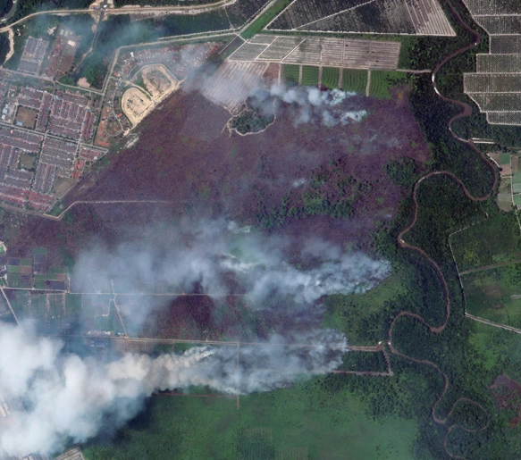
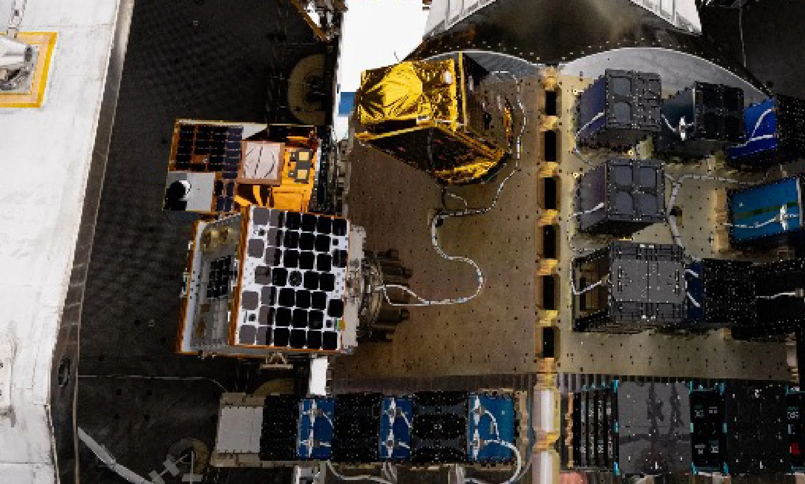
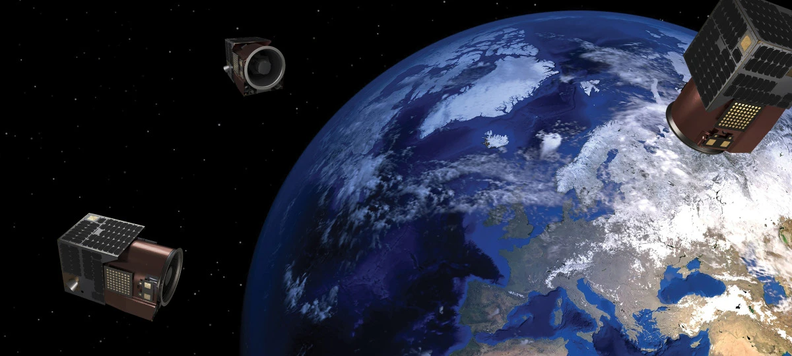

High temporal and high spatial resolution satellite data for diverse use cases.

Advanced features
- High temporal: frequent revisits of points of interest for regular, consistent updates.
- High spatial resolution: 50 cm multispectral data with top industry-level radiometric values.
- Big data: efficient analysis of large areas of spatial data.
- Tropical precision: a calibrated Malaysian atmospheric tropical model for accurate insights and analysis.
- Low latency for rapid response: task and access satellite imagery in under 6 hours.
Applications
- Agriculture
- Coastal & maritime monitoring
- Disaster management
- Sustainable forest management
- Large-scale development progress monitoring
- Land management
In pictures
{kind=link}
{kind=link}
{kind=link}
{kind=link}
{kind=link}

{kind=link}
{kind=link}

{kind=link}
{kind=link}
{kind=link}
{kind=link}
{kind=link}
{kind=link}

{kind=link}
{kind=link}

{kind=link}
{kind=link}

{kind=link}
{kind=link}

{kind=link}
{kind=link}

{kind=link}
{kind=link}

{kind=link}
{kind=link}
{kind=link}
{kind=link}
{kind=link}
{kind=link}

{kind=link}
Read the complete source transcript
UZMASAT-1 ADVANCED FEATURES
LEVERAGING HIGH TEMPORAL
& HIGH SPATIAL
RESOLUTION SATELLITE DATA
FOR DIVERSE
USE CASES
Ensures frequent revisit rates of any
point of interest, offering regular and
consistent updates
HIGH TEMPORAL
50 cm multispectral data with top industry-level radiometric values
HIGH SPATIAL
RESOLUTION
Analyze large areas
of spatial data
efficiently
BIG DATA
Calibrated Malaysian atmospheric tropical
model for accurate insights and analysis
TROPICAL PRECISION
Task and access satellite imagery in
under 6 hours
LOW LATENCY FOR RAPID RESPONSE
SEE BETTER. SEE THE BIGGER PICTURE. SEE THE UNSEEN
LARGE SCALE DEVELOPMENT
PROGRESS MONITORING
LAND MANAGEMENT
AGRICULTURE
COASTAL & MARITIME MONITORING
DISASTER MANAGEMENT
SUSTAINABLE FOREST MANAGEMENT